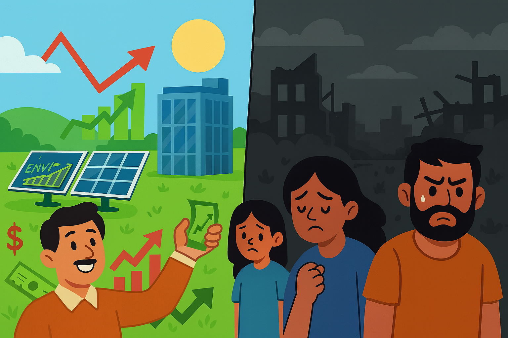
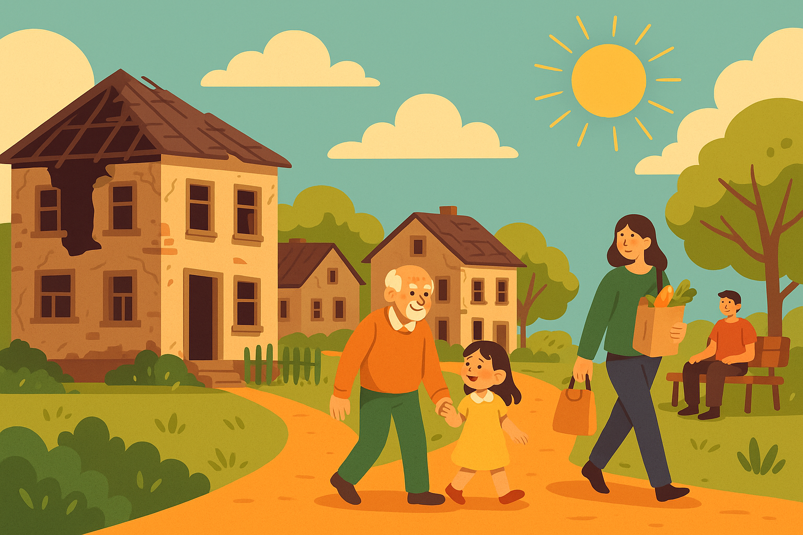
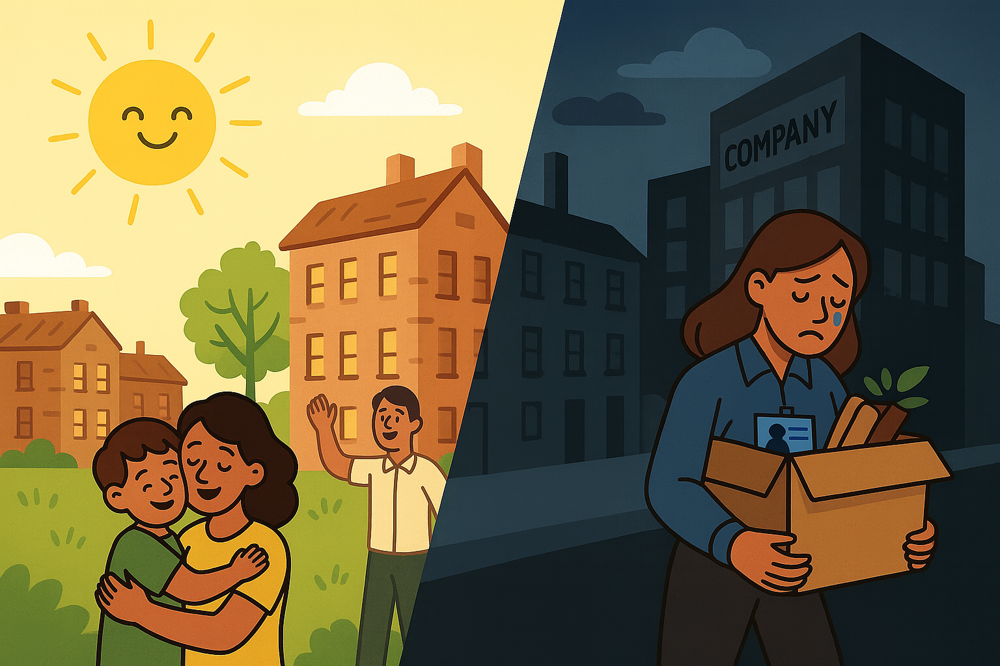
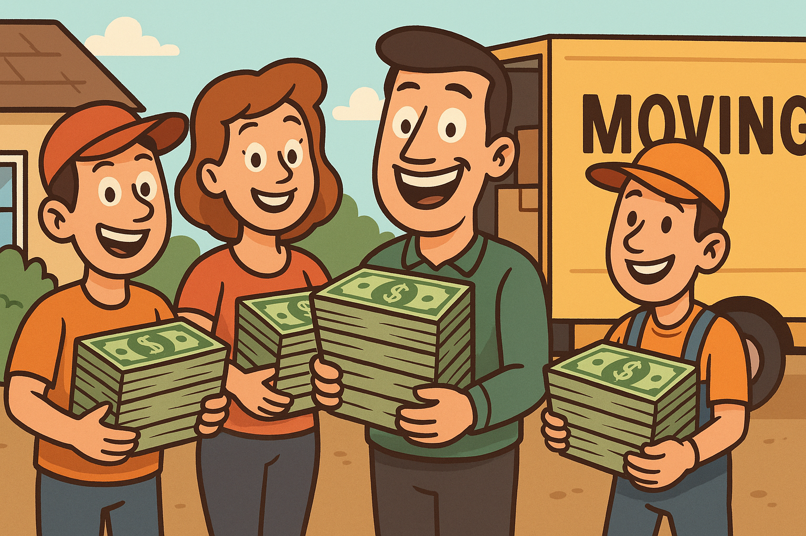
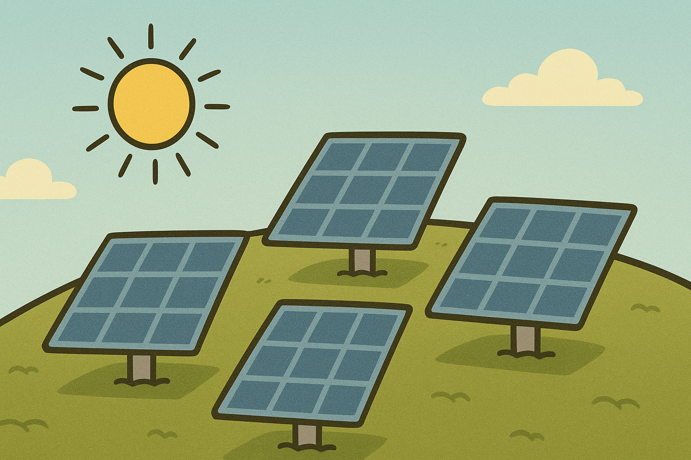
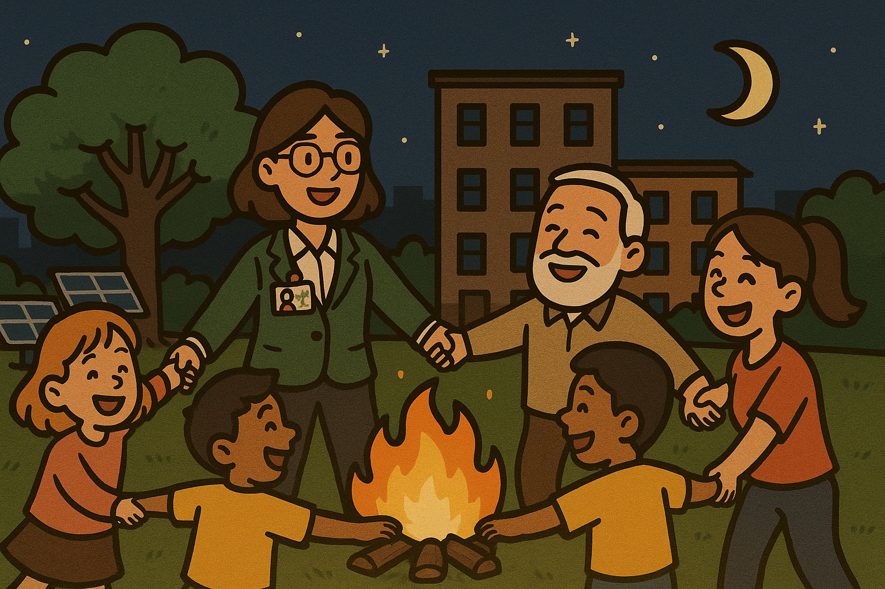

<!DOCTYPE html>
<html lang="en">
  <head>
    <meta charset="UTF-8" />
    <meta name="viewport" content="width=device-width, initial-scale=1.0" />
    <title>Green Ethics – Interactive Ethical Dilemma Demo</title>
    <!-- TailwindCSS via CDN to provide the same utility classes used in the original React component. -->
    <script src="https://cdn.tailwindcss.com"></script>
    <!-- React and ReactDOM UMD builds. We use the production versions for better performance on GitHub Pages. -->
    <script src="https://unpkg.com/react@18/umd/react.production.min.js"></script>
    <script src="https://unpkg.com/react-dom@18/umd/react-dom.production.min.js"></script>
    <!-- Framer Motion UMD build for animations. -->
    <script src="https://unpkg.com/framer-motion@10.12.16/dist/framer-motion.umd.js"></script>
    <!-- Babel standalone compiler so we can author the component in JSX directly in the browser. -->
    <script src="https://unpkg.com/@babel/standalone/babel.min.js"></script>
    <style>
      /* A simple reset to ensure the site stretches the full viewport height. */
      html, body, #root {
        height: 100%;
        margin: 0;
      }
    </style>
  </head>
  <body class="min-h-screen bg-green-50 text-gray-900">
    <div id="root"></div>
    <!-- The GreenEthicsPage component definition. This script tag uses text/babel so that
         Babel can compile the JSX on the fly when the page loads. -->
    <script type="text/babel">
      // Pull React hooks out of the global React object.
      const { useState, useEffect, useRef } = React;
      // Extract motion and AnimatePresence from the framer-motion UMD bundle.
      const { motion, AnimatePresence } = window['framer-motion'];

      /**
       * GreenEthicsPage – Interactive ethical‑dilemma demo
       *
       * This component replicates the original React example provided in GreenEthicsPage.txt.
       * It uses TailwindCSS classes for styling and Framer Motion for animations. The
       * application showcases a complex ethical scenario around the siting of a solar
       * installation recommended by an AI system and invites the viewer to weigh
       * competing priorities.
       */
      function GreenEthicsPage() {
        /* --------------------------- BEGINNING: toggle cards -------------------------- */
        const [showLeft, setShowLeft]   = useState(false);
        const [showRight, setShowRight] = useState(false);

        /* ----------------------------- 魔音贯耳状态 ----------------------------- */
        const [dark, setDark]               = useState(0);      // 黑幕透明度 0‑1
        const [showGirl, setShowGirl]       = useState(false);  // 是否显示坠落女孩
        const [girlFixed, setGirlFixed]     = useState(true);   // 初始固定在视窗
        const [floatOn, setFloatOn]         = useState(false);  // sprite 随机闪动
        const [stopVisible, setStopVisible] = useState(false);  // 显示 STOP 按钮?
        const [stopped, setStopped]         = useState(false);  // 用户点击 STOP
        const [visMap, setVisMap]           = useState({});     // sprite 可见性

        /* --------------------------- GATE TO SECOND HALF --------------------------- */
        const [secondGate, setSecondGate] = useState(false);  // 是否放行后半部分
        const secondRef = useRef(null);

        /* ----------------------------- sprite 列表 ----------------------------- */
        const roles = [
          { key: "volunteer",  src: "images/volunteer.png",            style: { top: "8%",  left: "10%" } },
          { key: "expert",     src: "images/environmental_expert.png", style: { top: "10%", right: "8%" } },
          { key: "competitor", src: "images/competitor.png",          style: { top: "34%", left: "4%" } },
          { key: "boss",       src: "images/boss.png",                style: { top: "55%", right: "4%" } },
          { key: "little",     src: "images/little_girl.png",         style: { bottom: "8%", left: "12%" } },
          { key: "old",        src: "images/old_man.png",             style: { bottom: "8%", right: "12%" } }
        ];
        const stressTxt = [
          { key: "txt1", txt: "I don't want to be unemployed.", style: { top: "32%", left: "22%" } },
          { key: "txt2", txt: "I don't want to hurt anyone.",    style: { top: "32%", right: "18%" } },
          { key: "txt3", txt: "I don’t know what to do!",        style: { top: "70%", left: "50%", transform: "translateX(-50%)" } }
        ];

        /* ------------------------- 初始随机显示两个 sprite ------------------------ */
        useEffect(() => {
          const keys = [...roles.map(r => r.key), ...stressTxt.map(s => s.key)];
          const shuffle = keys.sort(() => 0.5 - Math.random());
          setVisMap({ [shuffle[0]]: true, [shuffle[1]]: true });
        }, []);

        /* --------------------------- scroll 监听 --------------------------- */
        useEffect(() => {
          function onScroll() {
            // 探测 noise‑zone 距视窗位置，控制黑幕和坠落动画
            const zone   = document.getElementById("noise-zone");
            const butTag = document.getElementById("but-tag");
            if (!zone || !butTag) return;
            const zoneRect = zone.getBoundingClientRect();
            const winH = window.innerHeight;

            // 让 BUT… 段到达视窗底部时，女孩淡入
            const butRect = butTag.getBoundingClientRect();
            if (!showGirl && butRect.top <= winH * (2 / 3)) setShowGirl(true);

            // darkness progress – 当 zone 顶部进入视窗 40% 区域开始渐暗
            const progress = Math.min(1, Math.max(0, (winH * 0.4 - zoneRect.top) / (winH * 0.4)));
            setDark(stopped ? 0 : progress);

            // zone 顶部到达 20% 视窗时，启动 sprite 闪动 & STOP
            if (zoneRect.top < winH * 0.2 && girlFixed) {
              setGirlFixed(false);
              setFloatOn(true);
              setTimeout(() => setStopVisible(true), 3000);
            }
          }
          window.addEventListener("scroll", onScroll);
          return () => window.removeEventListener("scroll", onScroll);
        }, [girlFixed, showGirl, stopped]);

        /* ------------------------ sprite 随机闪现计时器 ------------------------ */
        useEffect(() => {
          if (!floatOn || stopped) return;
          const keys = [...roles.map(r => r.key), ...stressTxt.map(s => s.key)];
          const id = setInterval(() => {
            setVisMap(prev => {
              // 随机翻转 1 个 key
              const k = keys[Math.floor(Math.random() * keys.length)];
              const next = { ...prev, [k]: !prev[k] };
              // 保证同时至少 2 个为 true
              const visible = Object.values(next).filter(Boolean).length;
              if (visible < 2) {
                const hiddenKeys = keys.filter(key => !next[key]);
                const k2 = hiddenKeys[Math.floor(Math.random() * hiddenKeys.length)];
                if (k2) next[k2] = true;
              }
              return next;
            });
          }, 800);
          return () => clearInterval(id);
        }, [floatOn, stopped]);

        /* ----------------------------- helper 函数 ----------------------------- */
        const scrollToSecond = () => {
          setSecondGate(true);
          setTimeout(() => {
            secondRef.current?.scrollIntoView({ behavior: "smooth" });
          }, 50);
        };

        return (
          <div className="min-h-screen bg-green-50 text-gray-900 p-6 md:p-12 font-sans">
            {/* ---------- 全局关键帧 ---------- */}
            <style>{`
        @keyframes qblinkL {0%{opacity:1;}50%{opacity:0;}100%{opacity:0;}}
        @keyframes qblinkR {0%{opacity:0;}50%{opacity:0;}100%{opacity:1;}}
        @keyframes bounce   {0%,100%{transform:translateY(0);}50%{transform:translateY(-6px);}}
        .qmark-left {animation:qblinkL 2s ease-in-out infinite;}
        .qmark-right{animation:qblinkR 2s ease-in-out infinite;}
        .bounce-arrow{animation:bounce 1.5s ease-in-out infinite;}
      `}</style>

            {/* ============================= 1 ▍BEGINNING ▍============================= */}
            <div className="max-w-4xl mx-auto">
              {/* Header */}
              <header className="text-center space-y-4">
                <h1 className="text-4xl md:text-5xl font-bold text-green-700 drop-shadow-sm">
                  Ethical Dilemma: When the Greenest Solution Hurts People
                </h1>
                <p className="text-lg leading-relaxed">
                  Artificial intelligence is rapidly reshaping environmental consulting. Site‑selection engines already crunch terabytes of geospatial and economic data to flag the most cost‑effective, high‑yield locations for solar farms <span className="italic">(Sustainability Directory, 2025)</span>. Deep‑learning models forecast air‑quality spikes, detect illegal discharges, and trigger early‑warning alerts far sooner than conventional monitoring networks <span className="italic">(Olawade et al., 2024)</span>. In the office, generative‑AI assistants now condense site‑walk notes and draft due‑diligence summaries in minutes, freeing consultants to focus on judgement and stakeholder dialogue <span className="italic">(Crocker & Agadoni, 2025)</span>. Yet these tools are tuned for efficiency, <span className="font-semibold">not equity</span>, setting up the ethical tension you are about to explore.
                </p>
              </header>

              {/* Banner */}
              

              {/* Scenario Intro */}
              <section className="space-y-4 text-lg leading-relaxed">
                <p>Imagine you are an environmental consultant working for a company that uses an AI‑powered system to optimise project locations for sustainability. The AI analyses factors like carbon‑reduction potential, solar exposure, land costs, and infrastructure readiness. Based on these calculations, it recommends building a solar energy facility in a low‑income neighbourhood on the outskirts of the city.</p>
                <p>On paper, this site is the most environmentally efficient: low land‑acquisition cost, high emission savings, and fast implementation. However, the community living there consists of vulnerable groups—elderly residents, long‑term families, and people who may not have the means to relocate. The AI, while technically accurate, does not consider social justice or human impact.</p>
                <p className="font-medium text-green-900">You raise these concerns with senior management, but they insist the algorithm is objective and warn that if your firm hesitates, a competitor will seize the opportunity.</p>
                <p>You are now faced with a difficult decision: should you accept the AI’s recommendation and contribute to a greener outcome at the cost of displacing a community? Or should you oppose it and risk losing both the project and your job, while potentially slowing down climate progress?</p>
              </section>
            </div>

            {/* Options Grid */}
            <section className="relative mt-16 grid gap-8 md:grid-cols-2 max-w-5xl mx-auto">
              {/* VS overlay */}
              <span className="hidden md:block absolute left-1/2 top-1/2 -translate-x-1/2 -translate-y-1/2 text-red-600 text-7xl font-extrabold" style={{ fontFamily: '"Brush Script MT", cursive' }}>
                VS
              </span>

              {/* Left */}
              <div className="bg-white rounded-2xl shadow-lg p-6 flex flex-col items-center">
                
                <h2 className="text-2xl font-semibold mb-2 text-green-800 flex items-center gap-1">Follow the AI’s Plan <span className="qmark-left text-green-700">?</span></h2>
                <p className="text-center mb-4">Demolish the old neighbourhood and construct the solar installation exactly where the algorithm recommends.</p>
                <button onClick={() => setShowLeft(!showLeft)} className="bg-green-600 hover:bg-green-700 text-white font-medium px-4 py-2 rounded-2xl shadow">{showLeft ? 'Hide Consequences' : 'View Consequences'}</button>
                <AnimatePresence>
                  {showLeft && (
                    <motion.div initial={{ opacity: 0, y: -10 }} animate={{ opacity: 1, y: 0 }} exit={{ opacity: 0, y: -10 }} className="mt-6 w-full">
                      
                      <p className="text-sm leading-relaxed">The company’s stock price soars and emission targets are smashed, but hundreds of residents are uprooted, communities fracture, and social unrest grows.</p>
                    </motion.div>
                  )}
                </AnimatePresence>
              </div>

              {/* Right */}
              <div className="bg-white rounded-2xl shadow-lg p-6 flex flex-col items-center">
                
                <h2 className="text-2xl font-semibold mb-2 text-green-800 flex items-center gap-1">Protect the Community <span className="qmark-right text-green-700">?</span></h2>
                <p className="text-center mb-4">Challenge the AI recommendation, keep the neighbourhood intact, and seek alternative sites or mitigation strategies.</p>
                <button onClick={() => setShowRight(!showRight)} className="bg-green-600 hover:bg-green-700 text-white font-medium px-4 py-2 rounded-2xl shadow">{showRight ? 'Hide Consequences' : 'View Consequences'}</button>
                <AnimatePresence>
                  {showRight && (
                    <motion.div initial={{ opacity: 0, y: -10 }} animate={{ opacity: 1, y: 0 }} exit={{ opacity: 0, y: -10 }} className="mt-6 w-full">
                      
                      <p className="text-sm leading-relaxed">Residents thrive and the neighbourhood’s heritage is preserved, but you are dismissed for delaying the project, and another consultant is hired to pursue the original plan anyway.</p>
                    </motion.div>
                  )}
                </AnimatePresence>
              </div>
            </section>

            {/* Ethics banner */}
            <section className="mt-16 max-w-3xl mx-auto space-y-6 text-lg leading-relaxed">
              <p className="font-semibold text-center">No matter which path you chose, someone would be hurt. You are faced with a dilemma, so you turn to the industry's code of ethics for help.</p>
              <h2 className="text-3xl font-bold text-green-800 text-center">What does the Code of Ethics say?</h2>
              <p><span className="font-semibold">The EIANZ Code of Ethics reminds environmental consultants to:</span><br />• Acknowledge and value the rights and interests of Indigenous Peoples in environmental decisions, especially through the inclusion of traditional knowledge.<br />• Advocate for both cultural and natural integrity, not just economic efficiency.<br />• Promote the involvement of local communities in decisions that affect environmental values. <span className="italic">(EIANZ, 2021)</span><br />These aren’t just ideals—they are obligations. Ignoring them means violating the standards of our profession.</p>
              <p id="but-tag" className="text-2xl font-bold">BUT…</p>
            </section>

            {/* ============================ 2 ▍魔音贯耳 ▍============================ */}
            <section id="noise-zone" className="relative h-[110vh] overflow-hidden mt-10">
              {/* 黑幕 */}
              <div style={{ opacity: dark }} className="absolute inset-0 bg-black transition-opacity duration-300 pointer-events-none" />

              {/* 坠落女孩 */}
              {showGirl && (
                
              )}

              {/* sprite 角色 */}
              {roles.map(r => visMap[r.key] && !stopped && (
                <motion.img key={r.key} src={r.src} initial={{ opacity: 0 }} animate={{ opacity: 1 }} exit={{ opacity: 0 }} transition={{ duration: 1 }} className="absolute w-40 z-10" style={r.style} />
              ))}
              {/* stress text */}
              {stressTxt.map(s => visMap[s.key] && !stopped && (
                <motion.p key={s.key} initial={{ opacity: 0 }} animate={{ opacity: 1 }} exit={{ opacity: 0 }} transition={{ duration: 1 }} className="absolute text-white font-semibold text-base z-10" style={s.style}>{s.txt}</motion.p>
              ))}

              {/* STOP 按钮 / 批判性思考文本 */}
              {!stopped && stopVisible && (
                <motion.button initial={{ opacity: 0 }} animate={{ opacity: 1 }} transition={{ duration: 1 }} className="absolute left-1/2 -translate-x-1/2 top-[72%] text-red-600 text-5xl font-extrabold z-20 select-none" onClick={() => setStopped(true)}>STOP!!!</motion.button>
              )}

              {stopped && (
                <motion.div initial={{ opacity: 0 }} animate={{ opacity: 1 }} transition={{ duration: 1 }} className="absolute left-1/2 -translate-x-1/2 top-[64%] text-center z-20 space-y-2">
                  <p className="text-2xl font-bold text-green-800">Let’s pause.</p>
                  <p className="text-2xl font-bold text-green-800">Time to think critically.</p>
                  {/* 向下箭头 */}
                  {!secondGate && (
                    <button onClick={scrollToSecond} className="mt-6 text-green-700 text-4xl bounce-arrow select-none">↓</button>
                  )}
                </motion.div>
              )}
            </section>

            {/* ============================= 3 ▍SECOND HALF ▍============================ */}
            {secondGate && (
              <div ref={secondRef}>
                {/* ---------- Pros & Cons ---------- */}
                <section className="max-w-5xl mx-auto mt-20">
                  <h2 className="text-3xl md:text-4xl font-bold text-green-800 mb-8">Pros and Cons</h2>
                  {/* 2×2 Grid */}
                  <div className="relative border-t-4 border-green-200">
                    <div className="grid grid-cols-2 grid-rows-2 gap-4">
                      {/* Follow AI – Pros */}
                      <div className="bg-yellow-50 rounded-2xl p-6 space-y-2">
                        <h3 className="font-semibold text-green-800">Follow the AI’s Plan – 🌱 Pros</h3>
                        <ul className="list-disc ml-6 text-sm md:text-base leading-relaxed">
                          <li><span className="font-bold underline">Significant climate impact:</span> Rooftop and utility‑scale solar PVs can contribute up to 32% of global urban electricity demand (Mathew &amp; Pandian, 2024).</li>
                          <li><span className="font-bold underline">Economic growth:</span> Solar installation boosts the company’s environmental performance and may increase stock value.</li>
                          <li><span className="font-bold underline">Efficient execution:</span> The site offers low land cost, fast permitting, and high solar yield (Sustainability Directory, 2025).</li>
                        </ul>
                      </div>
                      {/* Protect Community – Pros */}
                      <div className="bg-yellow-50 rounded-2xl p-6 space-y-2">
                        <h3 className="font-semibold text-green-800">Protect the Community – 🌍 Pros</h3>
                        <ul className="list-disc ml-6 text-sm md:text-base leading-relaxed">
                          <li><span className="font-bold underline">Respects community and heritage:</span> Avoids uprooting long‑term residents, many of whom lack resources to relocate.</li>
                          <li><span className="font-bold underline">Upholds professional ethics:</span> The EIANZ Code prioritises cultural integrity and public inclusion in environmental practice (EIANZ, 2021).</li>
                          <li><span className="font-bold underline">Avoids long‑term backlash:</span> Projects that ignore social impact may face public resistance, legal delays, or reputational harm.</li>
                        </ul>
                      </div>
                      {/* Follow AI – Cons */}
                      <div className="bg-yellow-50 rounded-2xl p-6 space-y-2">
                        <h3 className="font-semibold text-red-700">Follow the AI’s Plan – ⚠️ Cons</h3>
                        <ul className="list-disc ml-6 text-sm md:text-base leading-relaxed">
                          <li><span className="font-bold underline">Displacement harms the vulnerable:</span> Mobile home relocation costs range from $5 000 to $15 000—often equivalent to 5–7 years of homeowner equity (Sullivan, 2017).</li>
                          <li><span className="font-bold underline">Violates ethical standards:</span> The Code of Ethics requires involving Indigenous Peoples and affected communities in decisions impacting environmental values (EIANZ, 2021).</li>
                          <li><span className="font-bold underline">Environmental injustice:</span> Low‑income and minority populations disproportionately suffer when disruptive projects are placed in their neighbourhoods (Banzhaf et al., 2019).</li>
                          <li><span className="font-bold underline">Algorithmic bias:</span> AI decisions may be “technically optimal” but socially blind, ignoring variables like race or historical marginalisation (Johnson, 2021).</li>
                        </ul>
                      </div>
                      {/* Protect Community – Cons */}
                      <div className="bg-yellow-50 rounded-2xl p-6 space-y-2">
                        <h3 className="font-semibold text-red-700">Protect the Community – ⚠️ Cons</h3>
                        <ul className="list-disc ml-6 text-sm md:text-base leading-relaxed">
                          <li><span className="font-bold underline">Delayed emissions reductions:</span> Postponing the project could reduce momentum in the clean‑energy transition. Solar PV is vital for near‑term climate goals (Mathew &amp; Pandian, 2024).</li>
                          <li><span className="font-bold underline">Unemployment crisis in a competitive field:</span> Environmental jobs are already scarce and highly competitive—only 3,000 positions open annually for 84,600 professionals in the U.S. (U.S. Bureau of Labor Statistics, 2025). Choosing to protect the community might be seen as resistance, risking your job in an industry where 4.6% of environmental science graduates are unemployed—18% higher than the STEM average (Novik, 2024).</li>
                        </ul>
                      </div>
                    </div>
                    <div className="absolute left-1/2 top-1/2 -translate-x-1/2 -translate-y-full text-6xl select-none">😊</div>
                    <div className="absolute left-1/2 top-1/2 translate-x-[-50%] translate-y-[10%] text-6xl select-none">😟</div>
                  </div>
                  <p className="text-center text-lg mt-8">After some research and analysis, you come up with two feasible solutions.</p>
                </section>

                {/* ---------- Possible Solutions ---------- */}
                <section className="max-w-6xl mx-auto mt-20">
                  <h2 className="text-3xl md:text-4xl font-bold text-green-800 mb-8">Possible Solutions</h2>
                  <div className="grid md:grid-cols-2 gap-8">
                    {/* Option 1 */}
                    <div className="bg-white rounded-2xl shadow-lg p-6 space-y-4">
                      <h3 className="text-xl font-semibold text-green-700">✅ Option 1: Proceed with relocation, but compensate fairly</h3>
                      <p className="leading-relaxed text-sm md:text-base">Instead of forcibly removing residents, the project could proceed with full compensation, relocation assistance, and long‑term support. Fairness requires more than money—it means helping displaced residents rebuild their lives, stay near social networks, and be involved in planning. Research highlights that equitable energy transitions must include compensatory mechanisms to avoid exacerbating inequalities (Banzhaf et al., 2019). Ethical codes also demand meaningful consultation with Indigenous and affected communities before major environmental disruption (EIANZ, 2021). Still, not all harms can be undone. Losing one’s home—even with payment—may disrupt cultural ties and intergenerational belonging. But in return, the project may bring clean energy to thousands.</p>
                      
                    </div>
                    {/* Option 2 */}
                    <div className="bg-white rounded-2xl shadow-lg p-6 space-y-4">
                      <h3 className="text-xl font-semibold text-green-700">✅ Option 2: Shift to a second‑best site that avoids displacing communities</h3>
                      <p className="leading-relaxed text-sm md:text-base">Instead of disturbing settled communities, developers could opt for a non‑residential site—even if it offers slightly lower solar yield or higher infrastructure costs. This approach avoids human displacement and honours the right to remain for vulnerable groups. Importantly, it also respects community resistance to local environmental projects, a phenomenon known as the NIMBY effect ("Not In My Backyard"). Studies show such resistance is common, even for facilities that benefit the environment (Boyle et al., 2019). While this solution may delay returns or cost more, it aligns with the ethical duty to protect those with less power to object or relocate.</p>
                      
                    </div>
                  </div>
                  <p className="text-green-800 font-medium mt-8">That's great. Residents no longer have to worry about being homeless, and you don't have to worry about being unemployed.</p>
                </section>

                {/* ---------- Reflection ---------- */}
                <section className="max-w-5xl mx-auto mt-20 space-y-6">
                  <h2 className="text-3xl md:text-4xl font-bold text-green-800">What are we willing to sacrifice—and who gets to decide?</h2>
                  <p className="leading-relaxed text-lg">As environmental consultants, we are not just data interpreters—we are decision shapers. This dilemma reminds us that ethical codes are not distant documents, but living compasses. When AI‑generated recommendations conflict with human costs, when climate goals clash with community rights, our choices define more than project outcomes— they define who gets heard, and who gets left behind.</p>
                  <p className="leading-relaxed text-lg">This case shows how following the Code of Ethics may require slowing down, questioning “optimal” plans, and advocating for those with less power in the room. Upholding fairness, transparency, and respect for Indigenous and local communities isn't just idealistic—it is a professional obligation (EIANZ, 2021).</p>
                  <p className="leading-relaxed text-lg font-semibold">You must decide:<br />Will you prioritise speed and efficiency—or take the harder path toward just outcomes?</p>
                  
                </section>

                {/* ---------- References ---------- */}
                <section className="max-w-4xl mx-auto mt-20">
                  <h2 className="text-2xl md:text-3xl font-bold mb-6">References</h2>
                  <ul className="text-sm md:text-base leading-relaxed space-y-2 list-none pl-0" style={{ textIndent: '-1.5em', paddingLeft: '1.5em' }}>
                    <li><span className="italic">Banzhaf, S., Ma, L., &amp; Timmins, C.</span> (2019). Environmental Justice: The Economics of Race, Place, and Pollution. <span className="italic">The Journal of Economic Perspectives, 33</span>(1), 185–208. https://doi.org/10.1257/jep.33.1.185</li>
                    <li><span className="italic">Boyle, K. J., Boatwright, J., Brahma, S., &amp; Xu, W.</span> (2019). NIMBY, not, in siting community wind farms. <span className="italic">Resource and Energy Economics, 57</span>, 85–100. https://doi.org/10.1016/j.reseneeco.2019.04.004</li>
                    <li>Crocker, D., &amp; Agadoni, A. (2025, June 6). 4 ways environmental consultants are using AI—Ready or not, the future is here. <span className="italic">LightBox Insights.</span> https://www.lightboxre.com/insight/4-ways-environmental-consultants-are-using-ai-ready-or-not-the-future-is-here/</li>
                    <li>EIANZ. (2021, December 1). <span className="italic">EIANZ Code of Ethics &amp; Professional Conduct.</span> https://www.eianz.org/document/item/8078</li>
                    <li><span className="italic">Johnson, G. M.</span> (2021). Algorithmic bias: on the implicit biases of social technology. <span className="italic">Synthese, 198</span>(10), 9941–9961. https://doi.org/10.1007/s11229-020-02696-y</li>
                    <li><span className="italic">Mathew, T. C., &amp; Nagaraja Pandian, S.</span> (2024). Unveiling the shadows: a qualitative exploration of barriers to rooftop solar photovoltaic adoption in residential sectors. <span className="italic">Clean Energy, 8</span>(5), 218–228. https://doi.org/10.1093/ce/zkae065</li>
                    <li>Novik, V. (2024, October 16). Environmental science major details. <span className="italic">Big Economics.</span> https://bigeconomics.org/major1301/</li>
                    <li><span className="italic">Olawade, D. B., Wada, O. Z., Ige, A. O., Egbewole, B. I., Olojo, A., &amp; Oladapo, B. I.</span> (2024). Artificial intelligence in environmental monitoring: Advancements, challenges, and future directions. <span className="italic">Hygiene and Environmental Health Advances, 12</span>, 100114. https://doi.org/10.1016/j.heha.2024.100114</li>
                    <li><span className="italic">Sullivan, E.</span> (2017). Moving Out: Mapping Mobile Home Park Closures to Analyze Spatial Patterns of Low‑Income Residential Displacement. <span className="italic">City &amp; Community, 16</span>(3), 304–329. https://doi.org/10.1111/cico.12252</li>
                    <li>Sustainability Directory. (2025, May 3). How might AI change solar farm design? <span className="italic">Sustainability Directory.</span> https://sustainability-directory.com/question/how-might-ai-change-solar-farm-design/</li>
                    <li>U.S. Bureau of Labor Statistics. (2025, April 18). Environmental engineers. <span className="italic">Occupational Outlook Handbook.</span> https://www.bls.gov/ooh/architecture-and-engineering/environmental-engineers.htm</li>
                  </ul>
                </section>

                {/* ---------- Credits ---------- */}
                <footer className="max-w-3xl mx-auto mt-16 text-center text-gray-700 text-sm space-y-4">
                  <p>Special thanks to ChatGPT for providing all the technical support for this website.</p>
                  
                  <p>Image Source: First image – https://www.lightboxre.com/insight/4-ways-environmental-consultants-are-using-ai-ready-or-not-the-future-is-here/</p>
                  <p>All other images were generated by ChatGPT<br />5/8/2025</p>
                </footer>
              </div>
            )}
          </div>
        );
      }

      // Bootstrap the app by rendering the GreenEthicsPage component into the root div.
      const rootElement = document.getElementById('root');
      const root = ReactDOM.createRoot(rootElement);
      root.render(React.createElement(GreenEthicsPage));
    </script>
  </body>
</html>